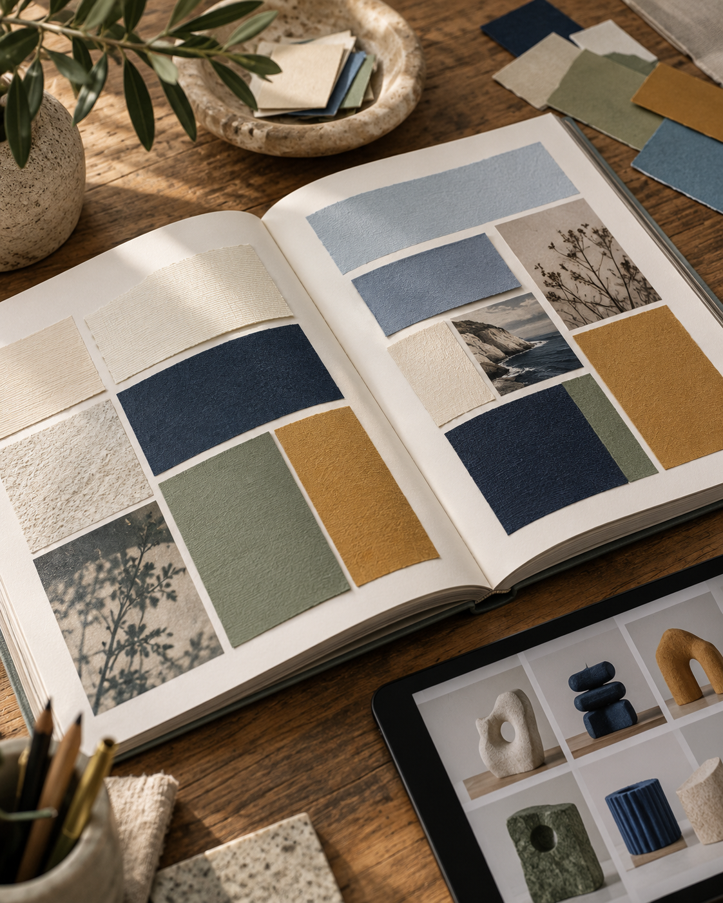

THE DESIGN JOURNALVol.07
2026
AI 视觉
观察
界面、文字与表达——让工具回到内容，
让设计保留清楚的判断。

暖白纸感 · 摄影与衬线字 · 三个可见页
界面、文字与表达——让工具回到内容，
让设计保留清楚的判断。

先保留重点，再安排细节的阅读顺序。
让形状与数据保持一眼可读的关系。
每个动作，都有看得见的回应。
降低视觉噪声，保留必要的层级。
— THE DESIGN JOURNAL · 2026 视觉观察
方向键或左右轻扫翻页；三页标题和笔记各自独立。
只复现原片01/11、09/11、10/11的三个可见构图。照片独立生成，公开文字独立改写；没有取得其余内页或作者模板。正常翻页曲线为拟合；编辑、保存、取消、触摸与返回为本地补写。未取得或运行作者Skill、模型与生成链。